| 日付 | 2009年9月20日（日） - 2009年9月22日（火） | ||||||
|---|---|---|---|---|---|---|---|
| 山域 | 北アルプス | ||||||
| メンバー | 家族（両親） | ||||||
| 山行形態 | 前夜泊2泊3日小屋泊 | ||||||
| アクセス | 電車、タクシー | ||||||
| ルート (Map) |
|
シルバーウィークの中3日を使って木曽駒ヶ岳～空木岳を歩こうという誘いが両親からあった。
しかし、直前に小屋がいっぱいで宿泊できないことが判明。急遽違う山を探すことにする。
そこで、比較的簡単に歩けて、大きな小屋も整備されている常念山脈を縦走することにする。
1日目
8:22 三俣駐車場到着。標高1285m。
信濃大町駅で合流した後、車は駅近くの駐車場に置いて、タクシーで入山。
シルバーウィークの2日目ということで駐車場は混むだろうという読みだったが、
まさにその通りで駐車場はいっぱい。
車道の下のほうまで路上駐車が続いていた。
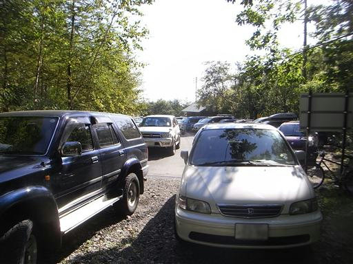
空を見上げると、完全な青空。
このままこの天気が続けば、最高の展望が期待できそうだ。
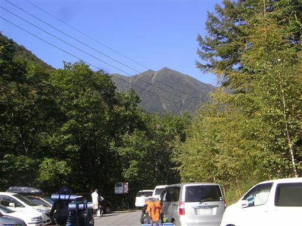
駐車場から少し歩いたところで登山届けを出して、登山道に入っていく。
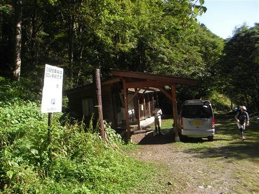
小さな吊橋を通って沢を渡る。
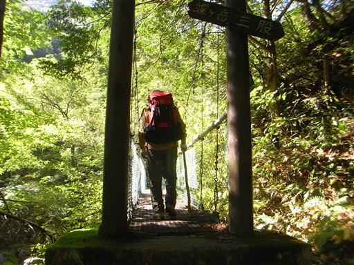
ツルリンドウ。この季節のアルプスに花など咲いていないと思っていたが、
ところどころで秋の花に出会える。
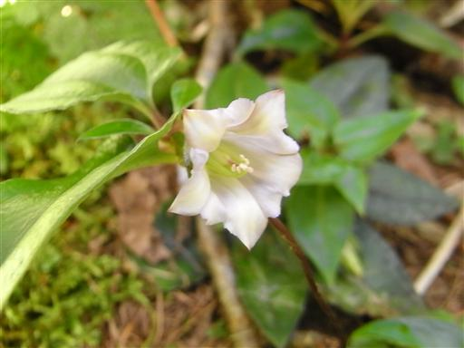
頭上に迫力ある常念岳が聳えている。今回の山行の主峰だ。
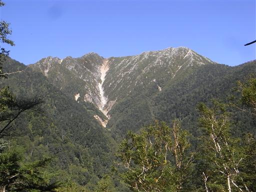
まめうち平に到着。
少し傾斜が緩み一服できるところだ。
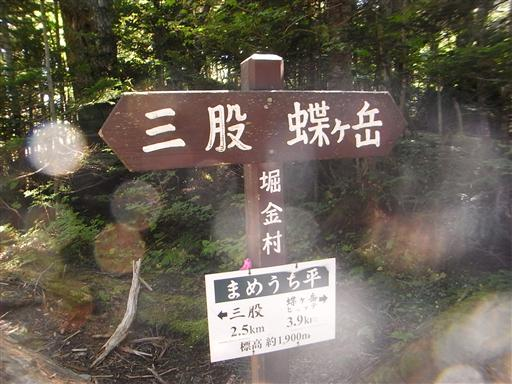
ハリブキ。赤い実がなっている。
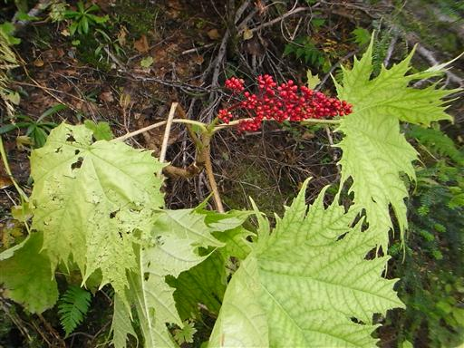
よいペースで標高をあげていく。
森林限界を超えると辺りの風景が大きく開ける。
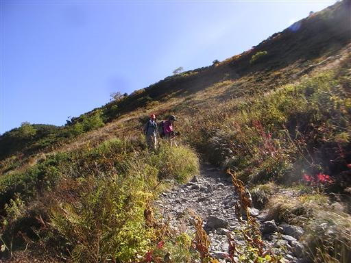
眼下に安曇野の市街地がよく見える。
常念山脈は北アルプス中心部の山と比べて下界の景色がよく見える。
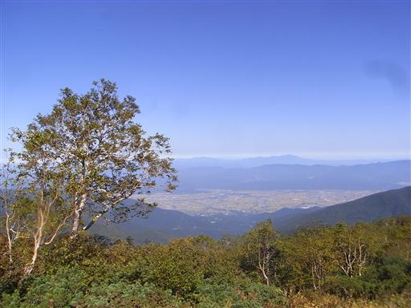
稜線直下。見事な快晴だ。
槍穂高の展望まであとわずか。
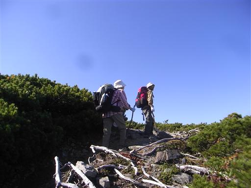
稜線に出ると、目の前に穂高岳の岩峰が目に飛び込んでくる。
とにかく巨大で、山というより壁のようだ。
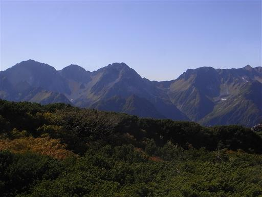
そして最高の展望が広がる稜線の真ん中に蝶ヶ岳ヒュッテが建てられている。
なかなか大きな小屋だ。
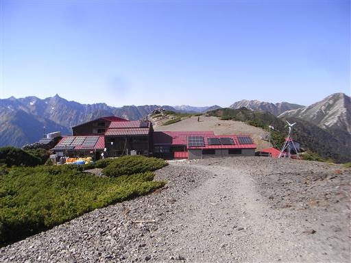
縦走路の先には美しい常念岳が聳えている。
明日歩いていく稜線だ。
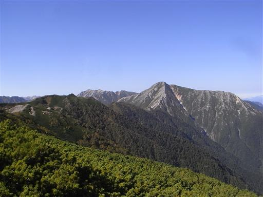
素晴らしい展望は置いといて、とりあえず小屋で宿泊の手続きを済ます。

小屋で手続きを済ませたら、展望を楽しむために外に出る。
テント場にはすでに多くのテントが張られている。
この晴天の下ではテント泊も気持ちがよいだろう。
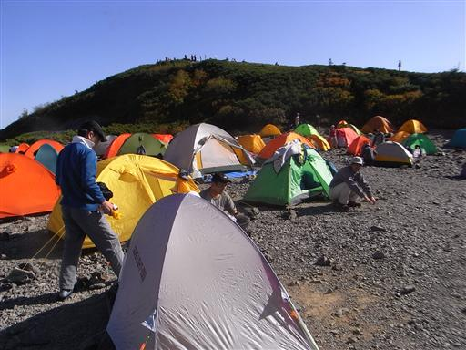
小屋のすぐ近くにある蝶ヶ岳山頂を目指す。
山頂にはすでに多くの人がいる。
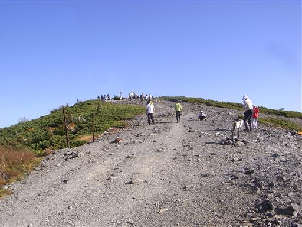
15:09 蝶ヶ岳山頂到着。標高2677m。
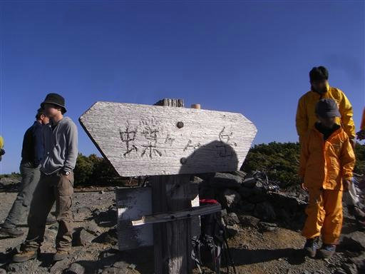
山頂からは真正面に穂高岳が望める。
これほど近い場所から穂高岳を望める山は少ない。

穂高岳の先は槍ヶ岳。
穂高のようなボリュームは無いが、一際目立つピークだ。
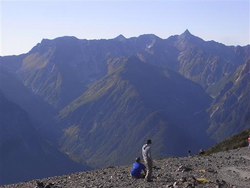
穂高岳の後ろに陽が沈んでいく。
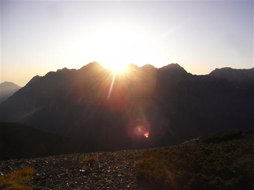
南の空は赤く染まっている。
山影は御嶽山、乗鞍岳、霞沢岳、焼岳だ。
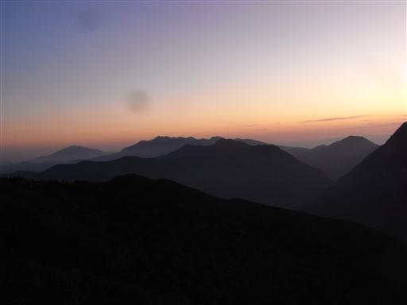
辺りが暗くなると安曇野の夜景がよく見える。
田舎町なのに結構な光の量だ。
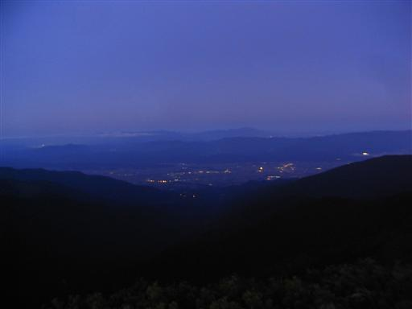